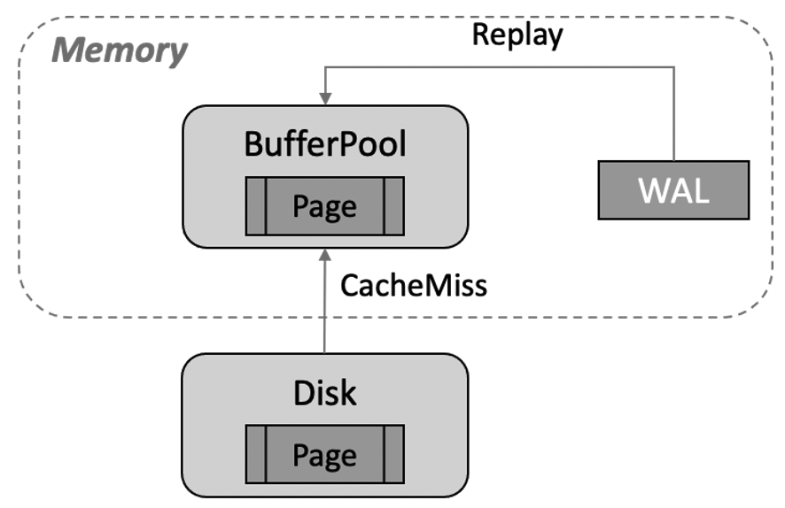
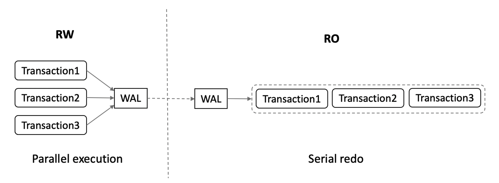
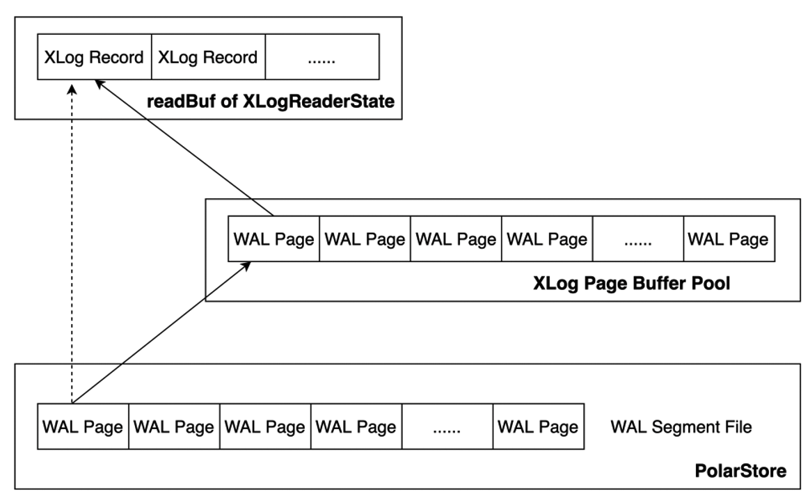

毫秒级延迟
背景介绍
PolarDB 采用了共享存储一写多读架构，读写节点 RW 和多个只读节点 RO 共享同一份存储，读写节点可以读写共享存储中的数据；只读节点仅能各自通过回放日志，从共享存储中读取数据，而不能写入，只读节点 RO 通过内存同步来维护数据的一致性。此外，只读节点可同时对外提供服务用于实现读写分离与负载均衡，在读写节点异常 crash 时，可将只读节点提升为读写节点，保证集群的高可用。基本架构图如下所示：

传统 share nothing 的架构下，只读节点 RO 有自己的内存及存储，只需要接收 RW 节点的 WAL 日志进行回放即可。如下图所示，如果需要回放的数据页不在 Buffer Pool 中，需将其从存储文件中读至 Buffer Pool 中进行回放，从而带来 CacheMiss 的成本，且持续性的回放会带来较频繁的 Buffer Pool 淘汰问题。

此外，RW 节点多个事务之间可并行执行，RO 节点则需依照 WAL 日志的顺序依次进行串行回放，导致 RO 回放速度较慢，与 RW 节点的延迟逐步增大。

与传统 share nothing 架构不同，共享存储一写多读架构下 RO 节点可直接从共享存储上获取需要回放的 WAL 日志。若共享存储上的数据页是最新的，那么 RO 可直接读取数据页而不需要再进行回放操作。
PolarDB 基于 RW 节点与 RO 节点共享存储这一特性，设计了 LogIndex 机制来加速 RO 节点的内存同步和日志回放，降低 RO 节点与 RW 节点之间的延迟，确保了 RO 节点的一致性与可用性。除了实现 RO 节点的内存同步，基于 LogIndex 机制还可实现 RO 节点的 Online Promote，可加速 RW 节点异常崩溃时，RO 节点提升为 RW 节点的速度，从而构建计算节点的高可用，实现服务的快速恢复。
RO 内存同步架构
LogIndex 中保存了数据页与修改该数据页的所有 LSN 的映射关系，基于 LogIndex 可快速获取到修改某个数据页的所有 LSN，从而可将该数据页对应日志的回放操作延迟到真正访问该数据页的时刻进行。LogIndex 机制下 RO 内存同步的架构如下图所示。
RW / RO的相关流程相较传统 share nothing 架构下有如下区别：
- 读写节点 RW 与只读节点 RO 之间不再传输完整的 WAL 日志，仅传输 WAL meta，减少网络数据传输量，降低了 RO 与 RW 节点的延迟；
- 读写节点 RW 依据 WAL meta 生成 LogIndex 写入 LogIndex Memory Table 中，LogIndex Memory Table 写满之后落盘，保存至共享存储的 LogIndex Table 中，已落盘的 LogIndex Memory Table 可以被复用；
- 读写节点 RW 通过 LogIndex Meta 文件保证 LogIndex Memory Table I/O 操作的原子性，LogIndex Memory Table 落盘后会更新 LogIndex Meta 文件，落盘的同时还会生成 Bloom Data，通过 Bloom Data 可快速检索特定 Page 是否存在于某 LogIndex Table 中，从而忽略不必扫描的 LogIndex Table 提升效率；
- 只读节点 RO 接收 RW 所发送的 WAL Meta，并基于 WAL Meta 在内存中生成相应的 LogIndex，同样写入其内存的 LogIndex Memory Table 中，同时将 WAL Meta 对应已存在于 Buffer Pool 中的页面标记为 Outdate，该阶段 RO 节点并不进行真正的日志回放，无数据 I/O 操作，可去除 cache miss 的成本；
- 只读节点 RO 基于 WAL Meta 生成 LogIndex 后即可推进回放位点，日志回放操作被交由背景进程及真正访问该页面的 backend 进程执行，由此 RO 节点也可实现日志的并行回放；
- 只读节点 RO 生成的 LogIndex Memory Table 不会落盘，其基于 LogIndex Meta 文件判断已满的 LogIndex Memory Table 是否在 RW 节点已落盘，已落盘的 LogIndex Memory Table 可被复用，当 RW 节点判断存储上的 LogIndex Table 不再使用时可将相应的 LogIndex Table Truncate。
PolarDB 通过仅传输 WAL Meta 降低 RW 与 RO 之间的延迟，通过 LogIndex 实现 WAL 日志的延迟回放 + 并行回放以加速 RO 的回放速度，以下则对这两点进行详细介绍。
WAL Meta
WAL 日志又称为 XLOG Record，如下图，每个 XLOG Record 由两部分组成：
- 通用的首部部分 general header portion：该部分即为 XLogRecord 结构体，固定长度。主要用于存放该条 XLOG Record 的通用信息，如 XLOG Record 的长度、生成该条 XLOG Record 的事务 ID、该条 XLOG Record 对应的资源管理器类型等;
- 数据部分 data portion：该部分又可以划分为首部和数据两个部分，其中首部部分 header part 包含 0～N 个 XLogRecordBlockHeader 结构体及 0～1 个 XLogRecordDataHeader[Short|Long] 结构体。数据部分 data part 则包含 block data 及 main data。每一个 XLogRecordBlockHeader 对应数据部分的一个 Block data，XLogRecordDataHeader[Short|Long] 则与数据部分的 main data 对应。

共享存储模式下，读写节点 RW 与只读节点 RO 之间无需传输完整的 WAL 日志，仅传输 WAL Meta 数据，WAL Meta 即为上图中的 general header portion + header part + main data，RO 节点可基于 WAL Meta 从共享存储上读取完整的 WAL 日志内容。该机制下，RW 与 RO 之间传输 WAL Meta 的流程如下：

- 当 RW 节点中的事务对其数据进行修改时，会生成对应的 WAL 日志并将其写入 WAL Buffer，同时拷贝对应的 WAL meta 数据至内存中的 WAL Meta queue 中；
- 同步流复制模式下，事务提交时会先将 WAL Buffer 中对应的 WAL 日志 flush 到磁盘，此后会唤醒 WalSender 进程；
- WalSender 进程发现有新的日志可以发送，则从 WAL Meta queue 中读取对应的 WAL Meta，通过已建立的流复制连接发送到对端的 RO；
- RO 的 WalReceiver 进程接收到新的日志数据之后，将其 push 到内存的 WAL Meta queue 中，同时通知 Startup 进程有新的日志到达；
- Startup 从 WAL Meta queue 中读取对应的 meta 数据，解析生成对应的 LogIndex memtable 即可。
RW 与 RO 节点的流复制不传输具体的 payload 数据，减少了网络数据传输量；此外，RW 节点的 WalSender 进程从内存中的 WAL Meta queue 中获取 WAL Meta 信息，RO 节点的 WalReceiver 进程接收到 WAL Meta 后也同样将其保存至内存的 WAL Meta queue 中，相较于传统主备模式减少了日志发送及接收的磁盘 I/O 过程，从而提升传输速度，降低 RW 与 RO 之间的延迟。
LogIndex
内存数据结构
LogIndex 实质为一个 HashTable 结构，其 key 为 PageTag，可标识一个具体数据页，其 value 即为修改该 page 的所有 LSN。LogIndex 的内存数据结构如下图所示，除了 Memtable ID、Memtable 保存的最大 LSN、最小 LSN 等信息，LogIndex Memtable 中还包含了三个数组，分别为：
- HashTable：HashTable 数组记录了某个 Page 与修改该 Page 的 LSN List 的映射关系，HashTable 数组的每一个成员指向 Segment 数组中一个具体的 LogIndex Item；
- Segment：Segment 数组中的每个成员为一个 LogIndex Item，LogIndex Item 有两种结构，即下图中的 Item Head 和 Item Seg，Item Head 为某个 Page 对应的 LSN 链表的头部，Item Seg 则为该 LSN 链表的后续节点。Item Head 中的 Page TAG 用于记录单个 Page 的元信息，其 Next Seg 和 Tail Seg 则分别指向后续节点和尾节点，Item Seg 存储着指向上一节点 Prev Seg 和后续节点 Next Seg 的指针。Item Head 和 Item Seg 中保存的 Suffix LSN 与 LogIndex Memtable 中保存的 Prefix LSN 可构成一个完整的 LSN，避免了重复存储 Prefix LSN 带来的空间浪费。当不同 Page TAG 计算到 HashTable 的同一位置时，通过 Item Head 中的 Next Item 指向下一个具有相同 hash 值的 Page，以此解决哈希冲突；
- Index Order：Index Order 数组记录了 LogIndex 添加到 LogIndex Memtable 的顺序，该数组中的每个成员占据 2 个字节。每个成员的后 12bit 对应 Segment 数组的一个下标，指向一个具体的 LogIndex Item，前 4bit 则对应 LogIndex Item 中 Suffix LSN 数组的一个下标，指向一个具体的 Suffix LSN，通过 Index Order 可方便地获取插入到该 LogIndex Memtable 的所有 LSN 及某个 LSN 与其对应修改的全部 Page 的映射关系。

内存中保存的 LogIndex Memtable 又可分为 Active LogIndex Memtable 和 Inactive LogIndex Memtable。如下图所示，基于 WAL Meta 数据生成的 LogIndex 记录会写入 Active LogIndex Memtable，Active LogIndex Memtable 写满后会转为 Inactive LogIndex Memtable，并重新申请一个新的 Active LogIndex Memtable，Inactive LogIndex Memtable 可直接落盘，落盘后的 Inactive LogIndex Memtable 可再次转为 Active LogIndex Memtable。

磁盘数据结构
磁盘上保存了若干个 LogIndex Table，LogIndex Table 与 LogIndex Memtable 结构类似，一个 LogIndex Table 可包含 64 个 LogIndex Memtable，Inactive LogIndex Memtable 落盘的同时会生成其对应的 Bloom Filter。如下图所示，单个 Bloom Filter 的大小为 4096 字节，Bloom Filter 记录了该 Inactive LogIndex Memtable 的相关信息，如保存的最小 LSN、最大 LSN、该 Memtable 中所有 Page 在 bloom filter bit array 中的映射值等。通过 Bloom Filter 可快速判断某个 Page 是否存在于对应的 LogIndex Table 中，从而可忽略无需扫描的 LogIndex Table 以加速检索。

当 Inactive LogIndex MemTable 成功落盘后，LogIndex Meta 文件也被更新，该文件可保证 LogIndex Memtable 文件 I/O 操作的原子性。如下，LogIndex Meta 文件保存了当前磁盘上最小 LogIndex Table 及最大 LogIndex Memtable 的相关信息，其 Start LSN 记录了当前已落盘的所有 LogIndex MemTable 中最大的 LSN。若 Flush LogIndex MemTable 时发生部分写，系统会从 LogIndex Meta 记录的 Start LSN 开始解析日志，如此部分写舍弃的 LogIndex 记录也会重新生成，保证了其 I/O 操作的原子性。

由 Buffer 管理 可知，一致性位点之前的所有 WAL 日志修改的数据页均已持久化到共享存储中，RO 节点无需回放该位点之前的 WAL 日志，故 LogIndex Table 中小于一致性位点的 LSN 均可清除。RW 据此 Truncate 掉存储上不再使用的 LogIndex Table，在加速 RO 回放效率的同时还可减少 LogIndex Table 占用的空间。
日志回放
延迟回放
LogIndex 机制下，RO 节点的 Startup 进程基于接收到的 WAL Meta 生成 LogIndex，同时将该 WAL Meta 对应的已存在于 Buffer Pool 中的页面标记为 Outdate 后即可推进回放位点，Startup 进程本身并不对日志进行回放，日志的回放操作交由背景回放进程及真正访问该页面的 Backend 进程进行，回放过程如下图所示，其中：
- 背景回放进程按照WAL顺序依次进行日志回放操作，根据要回放的 LSN 检索 LogIndex Memtable 及 LogIndex Table，获取该 LSN 修改的 Page List，若某个 Page 存在于 Buffer Pool 中则对其进行回放，否则直接跳过。背景回放进程按照 LSN 的顺序逐步推进 Buffer Pool 中的页面位点，避免单个 Page 需要回放的 LSN 数量堆积太多；
- Backend 进程则仅对其实际需要访问的 Page 进行回放，当 Backend 进程需要访问一个 Page 时，如果该 Page 在 Buffer Pool 中不存在，则将该 Page 读到 Buffer Pool 后进行回放；如果该 Page 已经在 Buffer Pool 中且标记为 outdate，则将该 Page 回放到最新。Backend 进程依据 Page TAG 对 LogIndex Memtable 及 LogIndex Table 进行检索，按序生成与该 Page 相关的 LSN List，基于 LSN List 从共享存储中读取完整的 WAL 日志来对该 Page 进行回放。

为降低回放时读取磁盘 WAL 日志带来的性能损耗，同时添加了 XLOG Buffer 用于缓存读取的 WAL 日志。如下图所示，原始方式下直接从磁盘上的 WAL Segment File 中读取 WAL 日志，添加 XLog Page Buffer 后，会先从 XLog Buffer 中读取，若所需 WAL 日志不在 XLog Buffer 中，则从磁盘上读取对应的 WAL Page 到 Buffer 中，然后再将其拷贝至 XLogReaderState的readBuf 中；若已在 Buffer 中，则直接将其拷贝至 XLogReaderState 的 readBuf 中，以此减少回放 WAL 日志时的 I/O 次数，从而进一步加速日志回放的速度。

Mini Transaction
与传统 share nothing 架构下的日志回放不同，LogIndex 机制下，Startup 进程解析 WAL Meta 生成 LogIndex 与 Backend 进程基于 LogIndex 对 Page 进行回放的操作是并行的，且各个 Backend 进程仅对其需要访问的 Page 进行回放。由于一条 XLog Record 可能会对多个 Page 进行修改，以索引分裂为例，其涉及对 Page_0、Page_1 的修改，且其对 Page_0 及 Page_1 的修改为一个原子操作，即修改要么全部可见，要么全部不可见。针对此，设计了 mini transaction 锁机制以保证 Backend 进程回放过程中内存数据结构的一致性。
如下图所示，无 mini transaction lock 时，Startup 进程对 WAL Meta 进行解析并按序将当前 LSN 插入到各个 Page 对应的 LSN List 中。若 Startup 进程完成对 Page_0 LSN List 的更新，但尚未完成对 Page_1 LSN List 的更新时，Backend_0 和 Backend_1 分别对 Page_0 及 Page_1 进行访问，Backend_0 和 Backend_1 分别基于 Page 对应的 LSN List 进行回放操作，Page_0 被回放至 LSN_N + 1 处，Page_1 被回放至 LSN_N 处，可见此时 Buffer Pool 中两个 Page 对应的版本并不一致，从而导致相应内存数据结构的不一致。

Mini transaction 锁机制下，对 Page_0 及 Page_1 LSN List 的更新被视为一个 mini transaction。Startup 进程更新 Page 对应的 LSN List 时，需先获取该 Page 的 mini transaction lock，如下先获取 Page_0 对应的 mtr lock，获取 Page mtr lock 的顺序与回放时的顺序保持一致，更新完 Page_0 及 Page_1 LSN List 后再释放 Page_0 对应的 mtr lock。Backend 进程基于 LogIndex 对特定 Page 进行回放时，若该 Page 对应在 Startup 进程仍处于一个 mini transaction 中，则同样需先获取该 Page 对应的 mtr lock 后再进行回放操作。故若 Startup 进程完成对 Page_0 LSN List 的更新，但尚未完成对 Page_1 LSN List 的更新时，Backend_0 和 Backend_1 分别对 Page_0 及 Page_1 进行访问，此时 Backend_0 需等待 LSN List 更新完毕并释放 Page_0 mtr lock 之后才可进行回放操作，而释放 Page_0 mtr lock 时 Page_1 的 LSN List 已完成更新，从而实现了内存数据结构的原子修改。